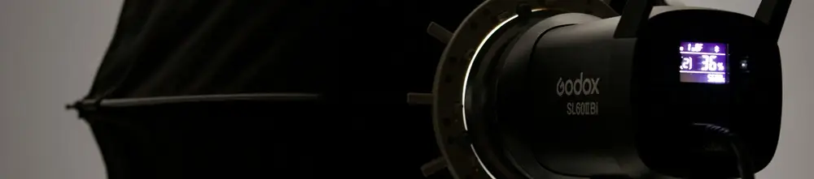

Rahasia Foto Sempurna: Memahami Fungsi Payung Diffuser di Studio Fotografi
Dipublikasikan pada 12 Agustus 2025

Saat berfoto untuk wisuda atau prewedding, kita semua ingin tampil maksimal. Riasan makeup terbaik disiapkan agar tampak menarik di depan kamera. Hasil akhir yang ideal adalah foto yang bisa menampilkan sisi terbaik dari semua persiapan tersebut.
Ngomong-ngomong, pernahkah Anda melihat suasana di balik layar pemotretan, baik itu untuk produk atau model? Seringkali kita melihat payung-payung putih atau kotak-kotak putih besar yang menyelimuti lampu studio. Mungkin Anda bertanya-tanya, apa sebenarnya fungsi dari alat-alat ini?
Payung Foto: Penyebar Cahaya (Diffuser) untuk Hasil Optimal
Alat-alat berwarna putih yang menyelimuti lampu studio tersebut berfungsi sebagai penyebar cahaya atau diffuser. Fungsinya sangat penting: untuk membuat cahaya yang dipancarkan oleh lampu studio menjadi lebih lembut.
Cahaya yang lebih lembut ini dibutuhkan agar tidak ada bayangan tajam pada objek yang difoto. Dengan adanya diffuser, cahaya dari lampu studio akan tersebar secara merata. Ini menghasilkan foto yang lebih jelas dan terang dari segala arah, tanpa bayangan yang mengganggu. Bayangkan jika riasan makeup yang sudah sempurna malah tertutup bayangan di bagian mata, warna riasan mata tentu tidak akan terlihat sempurna, kan?
Singkatnya, cahaya lembut tanpa bayangan adalah kunci untuk menghasilkan foto berkualitas tinggi di studio. Itulah mengapa penggunaan lampu yang terang harus dibarengi dengan kehadiran diffuser untuk mendapatkan hasil foto yang optimal. Pencahayaan yang baik memastikan kualitas gambar dan warna terabadikan secara sempurna.
Diffuser dalam Kehidupan Sehari-hari
Ternyata, prinsip diffuser juga ada di sekitar kita. Salah satu contohnya adalah pada lampu LED di rumah. Casing lampu yang berwarna putih buram atau keruh berfungsi sebagai diffuser untuk mengurangi ketajaman cahaya. Hasilnya, ruangan terasa lebih nyaman karena tidak ada titik cahaya yang terlalu tajam dan menyilaukan.
Bagaimana, menarik bukan melihat peran diffuser yang krusial, baik di studio foto maupun di kehidupan sehari-hari? Video singkat tentang penggunaan diffuser lampu dapat ditonton di bawah ini. Semoga bermanfaat!